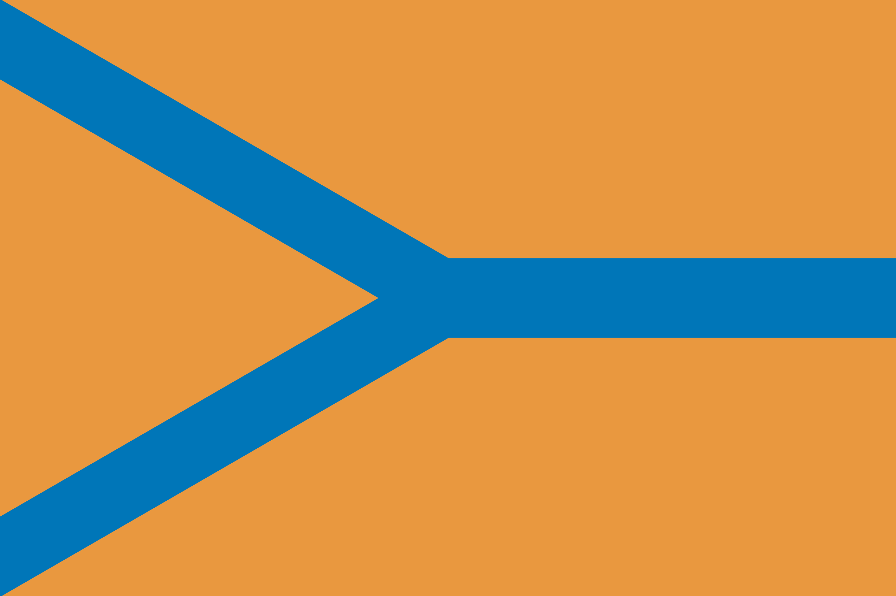

Помещичий дом с комплексом надворных построек, расположенный в черте города. Историко-этнографический музей в нём открылся в 1989 году. Внутри воссоздана обстановка прошлых веков, собраны предметы быта и обихода. Они рассказывают об эпохе в целом, крестьянской жизни и родословной знатных семей Череповца. На базе музея проводятся мастер-классы по художественной росписи и лепке из глины, а также конно-спортивные занятия.
Череповец
1.Усадьба Гальских
2.Воскресенский собор
Один из двух храмов одноименного мужского монастыря. Построен в середине XVIII века и теперь является самым старым зданием города. В советский период в нём некоторое время располагалась мастерская. Полное восстановление началось с 80-х годов и продлилось вплоть до нулевых. Среди прочего появились новые купола, позолотили иконостас, сделали каменным пол и отреставрировали алтари.
3.Камерный театр
В 60-х годах позапрошлого века представители интеллигенции города создали драматически кружок. Он менялся с течением времени, но не имел статуса театра. Только в 1993 году труппа получила собственное здание и соответствующий статус. Современный зал вмещает 438 зрителей. Постановки в репертуаре разные: от классики до произведений авторов наших дней. При театре работает молодёжная студия.
4.Музей металлургической промышленности
5.Художественный музей
Отделение художественной коллекции от собрания краеведческого музея произошло в 1938 году. Сначала ей отвели небольшое помещение, и только в 1992 году выдели собственное здание. Два выставочных зала заняты постоянно работающими выставками: «Русское искусство XVIII-XX веков» и «Мир русской иконы». Также есть отдельная галерея, где демонстрируются образцы современного искусства.
Немного информации:
Население: 314 834.
Средняя стоимость отелей: от 1800 руб до 5400 руб.
Среднегодовая температура воздуха: 3,3°C.
Часовая зона: МСК+0.
Расстояние от Москвы: 375 км.
Основан в 1777 году.
